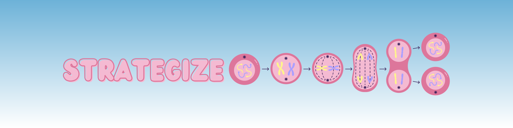

Choosing Effective Study Strategies
Study strategies support different levels of understanding. The "Levels of Knowing" system helps you choose the best approach for your goals. This section covers evidence-based strategies, how they work, and the importance of experimenting to find what suits you best.
Levels of Knowing8:
This diagram is one way of illustrating different levels of knowing, from remembering and understanding (at the bottom) to applying, then analyzing and evaluating (at the top). Each level builds on the prior level. Thus, higher levels require more time and effort (cognitive demand), as well as practice, to learn thoroughly.

Strategies:
Remember a Fact
Make Flashcards:
- Why?
- Useful mostly for memorizing! Using flashcards will help you become more familiar with terms and definitions through active recall and repetition.
- How?
- Use a tool like Quizlet or create your own flashcards.
Re-read notes:
- Why?
- Re-reading helps reinforce knowledge by exposing you to the material multiple times, aiding in retention.
- How?
- Review key sections of your text or notes, focusing on important concepts, and try to summarize them in your own words to strengthen recall.
Describe How Something Works
Describe how different concepts relate to each other:
- Why?
- Connecting ideas in your own words promotes long-term retention and allows you to practice active recall.
- How?
- Make a study guide, summarize notes in your own words, or draw diagrams and pathways from memory.
- Make a concept map: organize concepts into a diagram that shows how the concepts relate to each other. Draw arrows with explanations between the concepts.
- Return to a question you have already answered (on a homework assignment, clicker question, etc) and identify what concept this question was testing. What was the main idea? What else does this relate to in the course?
Explain a concept to someone else (teach it!)11
- Why?
- Verbally explaining helps integrate prior knowledge with new information and exposes knowledge gaps.
- How?
- Teach your friends the concepts you are studying. Even better, work with another person in the class to trade off explaining how to solve problems, or how to draw a diagram.
Use class learning objectives as a study guide12:
- Why?
- Using learning objectives helps you understand exactly what your professor expects you to know and accomplish16.
- How?
- Use the learning objectives from each class to create a focused study guide that highlights the difficult concepts.
Apply Your Knowledge
Solve a problem (self-test)11:
- Why?
- Testing your knowledge promotes long-term retention and retrieval of information.
- How?
- Answer practice problems and practice test questions without looking at your notes. Look for additional problems that test your knowledge on the same fundamental concepts. Answer questions you've already answered, prioritizing anything that was difficult the first time around.
Predict, Compare & Analyze Data
Analyze a figure or a table:
- Why?
- Analyzing figures helps you visualize the actual results of an experiment and gives you hands-on practice in interpreting data and understanding experimental outcomes within a real-life research context.
- How?
- Examine the figure and identify the technique used to obtain the results (e.g., statistical analysis, gel electrophoresis, microscopy). Use your existing knowledge of the experiment to interpret the data within this context.
Compare and contrast concepts:
- Why?
- Comparing and contrasting two or more different concepts can help you gain a deeper understanding of the content, organize information, identify patterns and themes, and connect ideas into a larger picture.
- How?
- Create your own table, Venn diagram, or chart using your notes and resources, or, for an extra challenge, without any extra help. For example, DNA and RNA are both made of nucleotides and share Cytosine, Guanosine, and Adenine. However, DNA has Thymidine and consists of two strands, whereas RNA has Uracil and is only one strand. From here, you can think about differences in function DNA and RNA have due to their structural differences.
Evaluate an Experiment
Determine whether a hypothesis, experiment, or result makes sense:
- Why?
- Engaging with experiments promotes deeper engagement with the concepts, helping you think more like a scientist.
- How?
- When looking at the results of an experiment, try to determine whether the hypothesis is valid, whether the experimental approach was sound, and whether the data support the conclusions. You can also ask yourself "What's the next logical question?" or "What gaps remain?"
Reflect
Identify confusing content:
- Why?
- Starting with what is confusing allows you to use study time more efficiently by focusing on difficult topics rather than ones you already know.
- How?
- Start with any time you felt unsure or answered something incorrectly.
- For example you did not understand the drawing we were supposed to make in class you should review the lecture and talk to a TA about how to make this drawing.
- Start with any time you felt unsure or answered something incorrectly.
Study in a group or partner setting:
- Why?
- Studying in a group promotes accountability, offers support when you encounter challenges, and encourages the use of active study strategies, making the learning process more effective.
- How?
- Seek a study partner or group by finding individuals who are dedicated to showing up consistently and actively participating in collaborative study sessions.